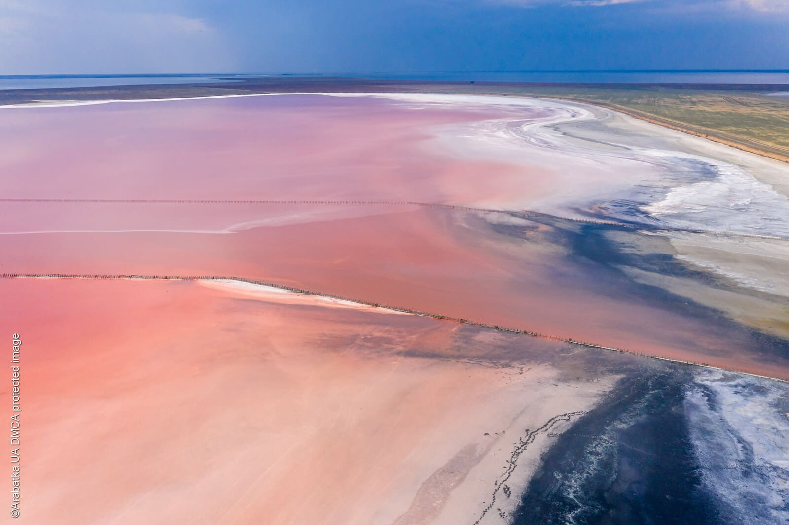
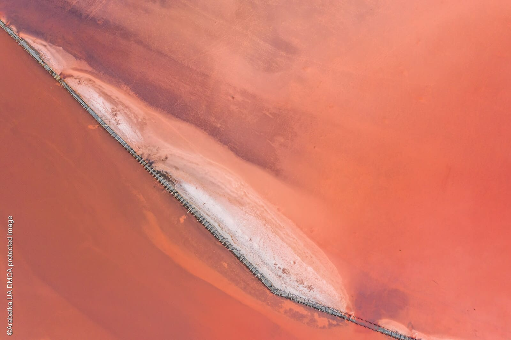

Hello dear reader, today I will provide you with information about one of the exotic places in Ukraine - a pink lake located in the north of the Arabat Spit.
 The size of the reservoir is almost 5 km long and 3 wide. The lake is fed by the waters of the Sivash, which enter the lake through a narrow strait, as well as from underground artesian wells and bottom sources. The salinity of Lake Geniche reaches 150 g/l in the hot season, with a predominance of common salt in the brine.
 Salt lakes on the Arabat Spit, which are part of the Genik group lakes, for centuries have been a source of table salt for peoples, inhabiting these lands. From the first half of the 19th century, the region began the rapid development of industrial salt mining, and Lake Genicheskoe becomes the most important among the reservoirs of the spit, where sedimentary salt is mined. IN In 1840, the largest salt industry appeared here, in three branches of which produced up to 50,000 tons of salt per year. Owner enterprises, General Meshkov was able to create a production that is still is considered a model for the production of sedimentary salt. At the best of times the fishery produced 11 types of salt, including pink mullet, which repeatedly received the highest awards of the Brussels exhibition. In the XX century, a salt-mining plant was opened on the basis of the salt mine, which was the city-forming enterprise for Priozernoye, located on shore of Rose Lake. The plant worked until the early 2000s, with gradual decrease in annual volumes to 20,000–25,000 tons, from most of which were technical salt.
Now the production is not working, and all the pink salt, which is sold in the markets of Arabatka, is mined in an artisanal way. It does not go through the stage of industrial cleaning, but, according to local residents, it is quite suitable for salting fish. In the area of the village of Priozernoe, you can see the remains of wooden checks, overgrown with salt crystals, against which tourists like to be photographed.
You should visit this place if you want:
Next, a more driving holiday on the lake will be described
A stage set right on the water, original installations, unusual costumes
and characters against the backdrop of the fantastic landscapes of the
genius Pink Lake - for the enchanting atmosphere, the event on
Arabatskaya Strelka has already been called the Ukrainian version of the
Burning Man festival, which takes place annually in the Nevada desert.
Contact our administrator and he will pick up something that will not leave you indifferent